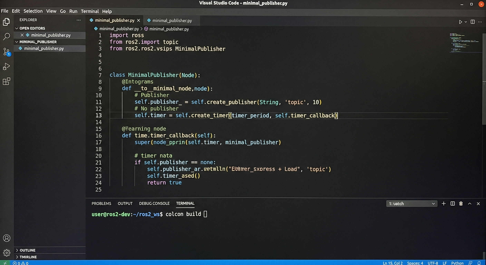

Python编程实战：编写发布者节点
完整代码示例
# minimal_publisher.py import rclpy from rclpy.node import Node from std_msgs.msg import String class MinimalPublisher(Node): def __init__(self): # 初始化节点 super().__init__('minimal_publisher') # 创建发布者 self.publisher = self.create_publisher( String, 'chatter', 10) # 创建定时器(0.5秒) timer_period = 0.5 self.timer = self.create_timer( timer_period, self.timer_callback) self.i = 0 def timer_callback(self): # 定时发布消息 msg = String() msg.data = f'Hello World: {self.i}' self.publisher.publish(msg) self.get_logger().info( f'Publishing: "{msg.data}"') self.i += 1 def main(args=None): rclpy.init(args=args) node = MinimalPublisher() # 保持节点运行 try: rclpy.spin(node) except KeyboardInterrupt: pass finally: node.destroy_node() rclpy.shutdown() if __name__ == '__main__': main()